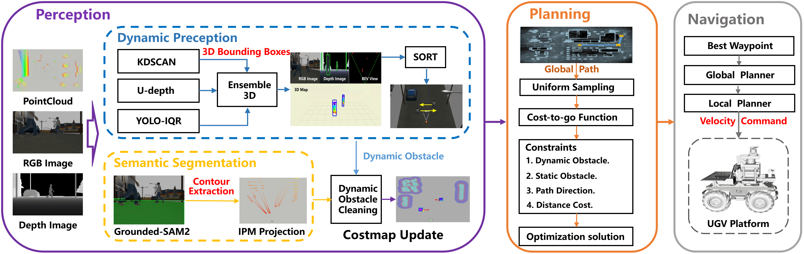
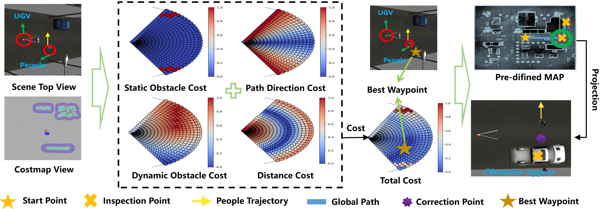
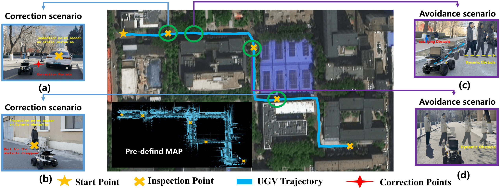

Large-scale outdoor navigation is essential for unmanned ground vehicles (UGVs), but despite significant advancements, they still face two key challenges in practical applications. The first one is how to ensure safe navigation in environments with dynamic and low-lying obstacles that LiDAR cannot detect. The second one is how to conduct the adaptive re-planning of target points while some of them are blocked by temporary obstacles. To address these challenges, this work proposes a Dynamic and Low-lying-obstacle Avoidance Navigation (DLAN) system to conduct perception, planning, and point correction for UGVs. To efficiently and accurately detect dynamic obstacles, it designs a lightweight Ensemble3D framework that integrates three fast but low-accuracy detection methods. A multi-criteria waypoint optimizer is used to assist UGVs in path planning. It ensures a balance between obstacle avoidance and path following. To adjust blocked target points through local re-planning, this work designs a checkpoint correction method. Extensive simulations and real-world experiments demonstrate that DLAN enables reliable navigation with high efficiency and robust obstacle avoidance in complex environments. More details can be found on our project homepage and video

The DLAN system framework integrates perception, planning, and real-time waypoint correction modules to ensure safe and efficient navigation in complex environments. The perception module uses Ensemble3D to fuse RGB and depth camera data for dynamic obstacle detection, with trajectory prediction via the SORT algorithm. Grounded-SAM2 segments passable areas and projects them into 3D space. The planning module optimizes waypoints based on obstacle avoidance and path adherence, which are then executed by the Navigation2 system. Real-time perception data refines waypoints to prevent navigation failures, ensuring adaptive and reliable navigation.

A schematic of the waypoint optimization algorithm. Information on low obstacles and dynamic obstacles is collected. The optimal waypoints are selected based on a predefined path. If a predefined point is located inside a static obstacle, it is adjusted accordingly.
Our UGV and its hardware. (a) The front view, and (b) The side view. The UGV used in this work is designed based on a SCOUT 2.0 four-wheel differential chassis equipped with a Mid-360 LiDAR and a RealSense D455 depth camera. Its control unit is a PC with an AMD R9-7945HX processor and an RTX 4060 GPU.

Navigation of UGV in a real inspection task. It can sequentially reach four pre-definded inspection points while avoiding dynamic and low-lying obstacles and correcting these inspection points.
@article{xxxxx,
title={Robust and Real-Time Perception and Planning for UGVs in Complex Outdoor Environments for Inspection Tasks},
author={Dongjie Huo, Dengshuo Wang, Dong Zhang, Mengchu Zhou, Zhengcai Cao},
journal={xxx},
volume={xx},
number={xx},
pages={xxx},
year={2025},
publisher={IEEE}
}